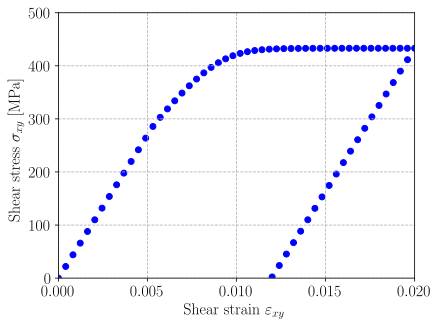

JAX implementation of elastoplasticity#
To go further in the implementation of complex behaviors using JAX, we now describe the implementation of elastoplastic behaviors. \(\newcommand{\bsig}{\boldsymbol{\sigma}} \newcommand{\beps}{\boldsymbol{\varepsilon}} \newcommand{\bI}{\boldsymbol{I}} \newcommand{\bn}{\boldsymbol{n}} \newcommand{\CC}{\mathbb{C}} \newcommand{\bepsp}{\boldsymbol{\varepsilon}^\text{p}} \newcommand{\dev}{\operatorname{dev}} \newcommand{\tr}{\operatorname{tr}} \newcommand{\sigeq}{\sigma_\text{eq}} \newcommand{\bnel}{\boldsymbol{n}_\text{elas}} \newcommand{\bs}{\boldsymbol{s}}\)
von Mises plasticity with isotropic hardening#
We first consider the case of von Mises elastoplasticity with a general nonlinear isotropic hardening. The corresponding evolution equations are recalled here.
Elastoplastic evolution equations#
The state variables consist here of the plastic strain \(\bepsp\) and the cumulated equivalent plastic strain \(p\) which is such that \(\dot{p} = \sqrt{\frac{2}{3}}\|\dot{\beps}^\text{p}\|\).
The elastic behavior is linear isotropic:
The yield condition is given by:
where \(\bs = \dev(\bsig)\) is the deviatoric stress and \(R(p)\) is the yield strength. We also introduce the von Mises equivalent stress:
Plastic evolution is given by the associated flow rule:
which gives in the present case:
Return mapping procedure#
The return mapping procedure is a predictor-corrector algorithm which consists in finding a new stress \(\bsig_{n+1}\) and plastic strain \(p_{n+1}\) state verifying the current plasticity condition from a previous stress \(\bsig_{n}\) and internal variable \(p_n\) state and an increment of total deformation \(\Delta \beps\). This step is quite classical in FEM plasticity for a von Mises criterion with isotropic hardening and follows notations from [].
In the case of plastic flow, the flow rule (5) is approximated at \(t_{n+1}\) using a backward-Euler approximation:
An elastic trial stress \(\bsig_{\text{elas}} = \bsig_{n} + \CC:\Delta \beps\) is first computed. The plasticity criterion is then evaluated with the previous plastic strain \(f_{\text{elas}} = \sigeq^{\text{elas}} - R(p_n)\) where \(\sigeq^{\text{elas}}\) is the von Mises equivalent stress of the elastic trial stress.
If \(f_{\text{elas}} < 0\), no plasticity occurs during this time increment and \(\Delta p,\Delta \boldsymbol{\varepsilon}^p =0\) and \(\bsig_{n+1} = \bsig_\text{elas}\).
Otherwise, plasticity occurs and the increment of plastic strain \(\Delta p\) is such that:
Taking the deviatoric part of the first equation and injecting in the second shows that:
which results in:
This relation is specific to the case of elastic isotropy and von Mises yield surface. It does not hold for more general cases. Importantly, it allows to express the plastic strain increment explicitly as a function of the equivalent plastic strain increment:
The only remaining unknown is \(\Delta p\) which is deducing from the third equation of (7):
JAX implementation#
To summarize, the JAX implementation will involve the following steps:
computing an elastic stress predictor
checking wether the yield criterion is exceeded or not
setting \(\Delta p,\Delta_\bepsp=0\) if it is not attained
otherwise, solving a nonlinear equation for \(\Delta p\) and setting \(\Delta \bepsp\) accordingly
One key challenge here is the use of conditionals to distinguish elastic and plastic evolutions. Moreover, we will use the tangent_AD decorator to compute the tangent operator via AutoDiff.
First, we load the necessary modules and functions. The vonMisesIsotropicMaterial takes as input a LinearElasticModel for the elastic part and a function yield_stress representing \(R(p)\). We use the dev function from tensors to compute the deviatoric part of a 2nd-rank symmetric tensor. Finally, we declare the scalar equivalent strain \(p\) as an internal state variables for this behavior.
import jax
import jax.numpy as jnp
from dolfinx_materials.material.jax import JAXMaterial, tangent_AD, JAXNewton
from .tensors import dev
class vonMisesIsotropicHardening(JAXMaterial):
def __init__(self, elastic_model, yield_stress):
super().__init__()
self.elastic_model = elastic_model
self.yield_stress = yield_stress
self.equivalent_norm = lambda sig: jnp.sqrt(3 / 2.0) * jnp.linalg.norm(dev(sig))
@property
def internal_state_variables(self):
return {"p": 1}
Note
Since we restrict here to isotropic hardening, we do not need to store the history of \(\bepsp\) in the state variables.
In a second step, we implement the constitutive update, decorated with tangent_AD. The function must therefore provide the stress and the state as output and accepts the current strain eps, the previous state state and the time step as inputs.
First, we retrieve the relevant state variables and we compute the elastic predictor stress sig_el.
@tangent_AD
def constitutive_update(self, eps, state, dt):
eps_old = state["Strain"]
deps = eps - eps_old
p_old = state["p"][0] # convert to scalar
sig_old = state["Stress"]
mu = self.elastic_model.mu
C = self.elastic_model.C
sig_el = sig_old + C @ deps
We then evaluate the yield criterion for the elastic predictor. We also define the vector \(\bnel=\bs_\text{elas}/\sigeq^\text{elas}\) which, for this specific case, is normal to the yield surface. Note that we clip the value of the equivalent stress to avoid dividing by zero.
sig_Y_old = self.yield_stress(p_old)
sig_eq_el = jnp.clip(self.equivalent_norm(sig_el), a_min=1e-8)
n_el = dev(sig_el) / sig_eq_el
yield_criterion = sig_eq_el - sig_Y_old
We now define the value of the plastic strain increment as a function of the equivalent plastic strain increment \(\Delta p\) which is still unknown. We use jax.lax.cond control flow primitive to express the if/else condition, switching between elastic and plastic evolutions. The advantage of jax.lax.cond is that we can still use JIT and forward/backward differentiation.
def deps_p(dp, yield_criterion):
def deps_p_elastic(dp):
return jnp.zeros(6)
def deps_p_plastic(dp):
return 3 / 2 * n_el * dp
return jax.lax.cond(
yield_criterion < 0.0,
deps_p_elastic,
deps_p_plastic,
dp,
)
We now define the nonlinear function \(r(\Delta p)=0\) which should be solved to compute \(\Delta p\). We still use jax.lax.cond and use the trivial function \(r(\Delta p)=\Delta p\) for the elastic case, yielding \(\Delta p=0\). Then, we solve this nonlinear function using a custom JAXNewton solver. The latter implements a local Newton method and uses AD to compute the corresponding jacobian. Finally, it is also fully differentiable.
def r(dp):
r_elastic = lambda dp: dp
r_plastic = (
lambda dp: sig_eq_el - 3 * mu * dp - self.yield_stress(p_old + dp)
)
return jax.lax.cond(yield_criterion < 0.0, r_elastic, r_plastic, dp)
newton = JAXNewton(r)
dp, res = newton.solve(0.0)
Once \(\Delta p\) has been solved for, we compute the final stress and update the corresponding state dictionary.
sig = sig_el - 2 * mu * deps_p(dp, yield_criterion)
state["Strain"] += deps
state["p"] += dp
state["Stress"] = sig
return sig, state
Simulating this behavior for a loading/unloading shear strain with an exponential harding law results in the following stress/strain curve.
{kind=link}
Generic elastoplasticity with isotropic hardening#
In this section, we expand upon the previous section by considering a generic yield surface \(f(\bsig;p) = \bar{\sigma}(\bsig) - R(p)\) instead of the specific von Mises surface. Here \(\bar{\sigma}\) represents a chosen equivalent stress. For simplicity, we still consider a generic isotropic hardening function \(R(p)\) and associated (normal) plastic flow rule. In discretized form, the latter reads:
where \(\bn\) denotes the normal vector to the yield surface. This vector depends on the final stress state \(\bsig\). This is the main difference with the von Mises case. As a consequence, the return mapping can no longer be written explicitly in terms of the elastic predictor. We must formulate a nonlinear system of equations involving both the cumulated plastic strain \(p\) and the plastic strain tensor \(\bepsp\).
The GeneralIsotropicHardening class now depends on an elastic model, a yield stress function and a function implementing the chosen equivalent stress \(\bar{\sigma}(\bsig)\).
import jax
import jax.numpy as jnp
from dolfinx_materials.material.jax import JAXMaterial, tangent_AD, JAXNewton
class GeneralIsotropicHardening(JAXMaterial):
def __init__(self, elastic_model, yield_stress, equivalent_stress):
super().__init__()
self.elastic_model = elastic_model
self.yield_stress = yield_stress
self.equivalent_stress = equivalent_stress
@property
def internal_state_variables(self):
return {"p": 1}
As before, we implement the constitutive update, decorated with tangent_AD. We first retrieve the relevant state variables and we compute the elastic predictor stress sig_el, the elastic equivalent stress \(\bar(\bsig_\text{elas})\) and yield criterion predictor.
@tangent_AD
def constitutive_update(self, eps, state, dt):
eps_old = state["Strain"]
deps = eps - eps_old
p_old = state["p"][0] # convert to scalar
sig_old = state["Stress"]
C = self.elastic_model.C
sig_el = sig_old + C @ deps
sig_Y_old = self.yield_stress(p_old)
sig_eq_el = jnp.clip(self.equivalent_stress(sig_el), a_min=1e-8)
yield_criterion = sig_eq_el - sig_Y_old
We define a function representing the final stress state as a function of the yet unknown plastic strain increment. To express the normality rule, we use JAX AD to compute the yield stress normal \(\bn\) using jax.jacfwd.
def stress(deps_p):
return sig_old + C @ (deps - dev(deps_p))
normal = jax.jacfwd(self.equivalent_stress)
Now, we set up the system of nonlinear equations to be solved at the material point level. In the plastic evolution regime, the two equations correspond to the plastic flow rule and yield condition i.e.:
As before, we use jax.lax.cond to distinguish the plastic and elastic regimes and use trivial equations \(r_p=\Delta p=0\) and \(r_{\Delta\bepsp} = \Delta \bepsp = 0\) in the elastic regime.
The JAXNewton solver accepts a tuple of residual functions to define the system, each equation depending on the variable \(x=(\Delta\bepsp, \Delta p)\).
def r_p(dx):
deps_p = dx[:-1]
dp = dx[-1]
sig_eq = self.equivalent_stress(stress(deps_p))
r_elastic = lambda dp: dp
r_plastic = lambda dp: sig_eq - self.yield_stress(p_old + dp)
return jax.lax.cond(yield_criterion < 0.0, r_elastic, r_plastic, dp)
def r_eps_p(dx):
deps_p = dx[:-1]
dp = dx[-1]
sig = stress(deps_p)
n = normal(sig)
r_elastic = lambda deps_p, dp: deps_p
r_plastic = lambda deps_p, dp: deps_p - n * dp
return jax.lax.cond(yield_criterion < 0.0, r_elastic, r_plastic, deps_p, dp)
newton = JAXNewton((r_eps_p, r_p))
Finally, the local Newton system is solved (the corresponding jacobian is computed via AD) and we update the stress and internal state variables.
x0 = jnp.zeros((7,))
x, res = newton.solve(x0)
depsp = x[:-1]
dp = x[-1]
sig = stress(depsp)
state["Strain"] += deps
state["p"] += dp
state["Stress"] = sig
return sig, state
For an illustrative application of this behavior, see Computing the Hosford plane stress yield surface.